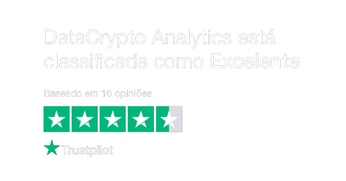

Membros
Docs
Login
Estamos constantemente atualizando e implementando novas funcionalidades, ative as notificações para ficar atualizado quando novas versões saírem!
×
Inicio
App
Indicadores
-
Atualizado: 30 de Janeiro de 2022
Indicadores TradingView
Ver Todos
Tendência
Volume
Buy & Sell
B&S v3.2 - DataCrypto Analytics
Buy & Sell
DCA PREMIUM - DataCrypto Analytics
Buy & Sell
B&S v3.4 - DataCrypto Analytics
Buy & Sell
Cross SMA - DataCrypto Analytics
Buy & Sell
Market Makers - DataCrypto Analytics
Tendência
PVA Volume - DataCrypto Analytics
Volume
Bitcoin Out Volume Blockchain
Volume
Bitcoin Wallet Transaction Volume
Volume
Hashrate Bitcoin - DataCrypto Analytics
Volume

Machine Learning
Parte do código regressao-linear-v0.3-3-PT.py
Pesquisas
Noções básicas para negociar Forex
Outubro 20, 2020
EDUCAÇÃO
Explicação dos ciclos de mercado
Novembro 20, 2020
EDUCAÇÃO
Trustpilot